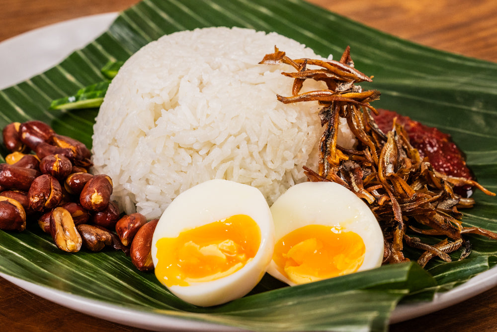

Nasi Lemak

Description
A popular Malaysian dish that makes a great meal during the week!
Original recipe can be found here.
Ingredients
- 450g (1 lb) jasmine rice
- 200ml (6.8 fl oz) coconut milk
- 2 pandan leaves
- bottom half of a lemongrass stalk
- salt to taste
- peanut oil for frying
- 200g (7 oz) raw peanuts
- 150g (5.3 oz) dried anchovies
- 4 eggs, soft-boiled
- 1/2 a cucumber, sliced
- banana leaves for serving
- your favourite sambal
Steps
- To make the coconut rice, rinse the rice three times and then drain the water. Open the coconut milk
and reserve the cream from the top for later. Add the 200ml (6.8 fl oz) of coconut milk to the
rice cooker bowl with the rinsed rice, then top it off with water until it reaches the first
knuckle of your finger. Add the pandan and crushed lemongrass to the pot along with a pinch of
salt, and cook in the rice cooker.
- Once the rice is cooked, add the reserved coconut cream to the top of the cooked rice and let it sit
for 10 minutes.
- Then, fry the peanuts and anchovies, boil your eggs to your liking (I recommend 7 minutes), slice
the cucumber, and toast the banana leaves over an open flame.
- To assemble, add the rice onto the toasted banana leaves, then arrange the eggs, peanuts, cucumber,
sambal, and fried anchovies around the outside.